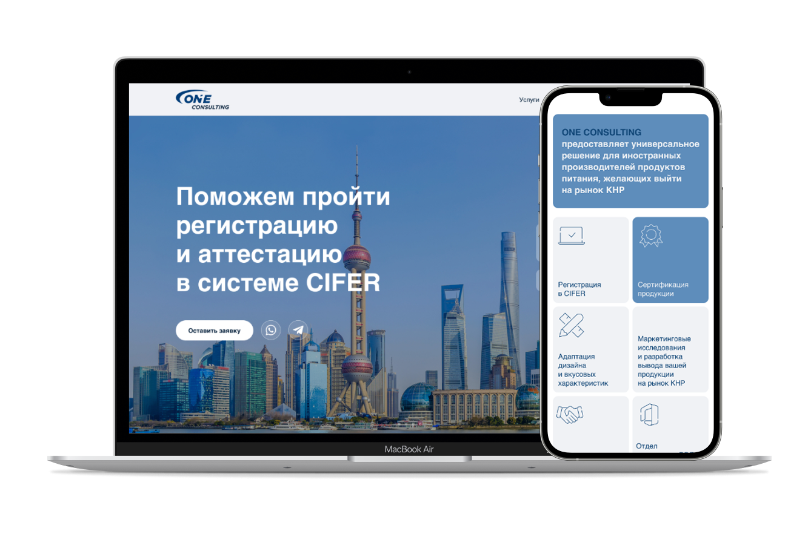
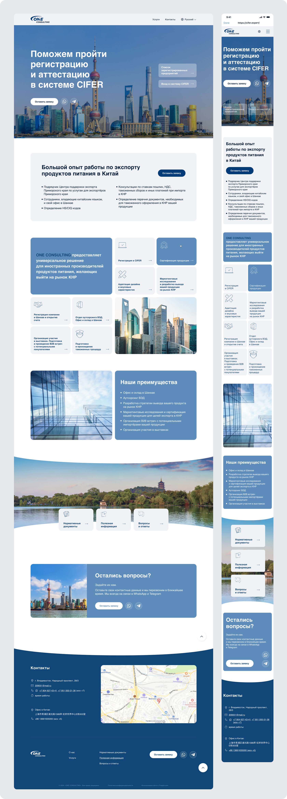
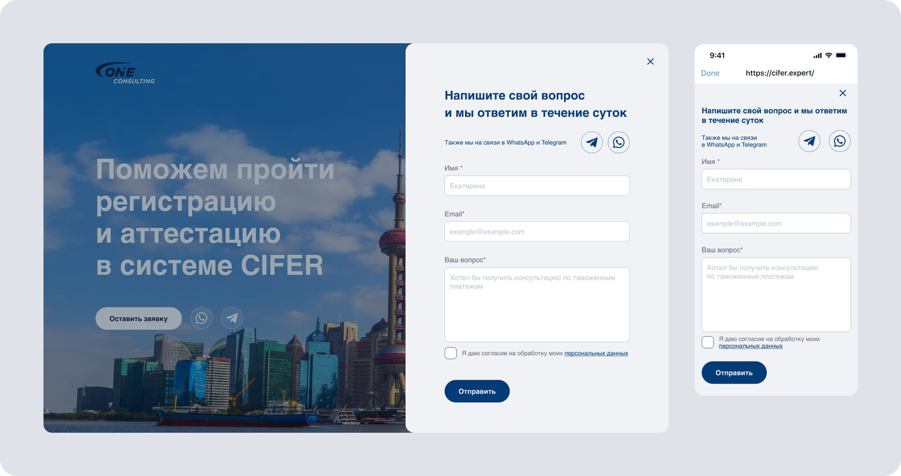

← Назад
Информационный сайт для компании-помощника в Китае ONE CONSULTING
cifer.expertКорпоративный сайт консалтинговой компании, помогающей бизнесу пройти регистрацию и аттестацию в системе CIFER для экспорта в Китай. Тематика проекта — B2B-услуги.

Задача
Спроектировать информационный сайт для привлечения новых клиентов
Проблемы
- Пользователи сталкивались со сложной и перегруженной информацией
- Было неочевидно, с чего начать и какие услуги необходимы
- Интерфейс должен был вызывать доверие и ощущение экспертизы
- Пользователи не всегда были готовы сразу оставлять заявку
Исследования
Был проведен анализ сайтов конкурентов для выявления лучших отраслевых практик и формирования конкурентных преимуществ компании.
Исследование позволило определить и сформировать преимущества компании среди посредников на китайском рынке, изучить предоставляемые услуги и адаптировать наш digital-инструментарий под ожидания целевой аудитории.
Результаты работы
- Структурировала большой объём информации и снизила когнитивную нагрузку
- Спроектировала понятный первый экран с чётким ценностным предложением
- Выстроила визуальную иерархию и деловой UI для повышения доверия
- Продумала пользовательский путь с несколькими точками входа к заявке
- Сделала интерфейс универсальным и понятным для пользователей с разным уровнем опыта
Итоговый дизайн

